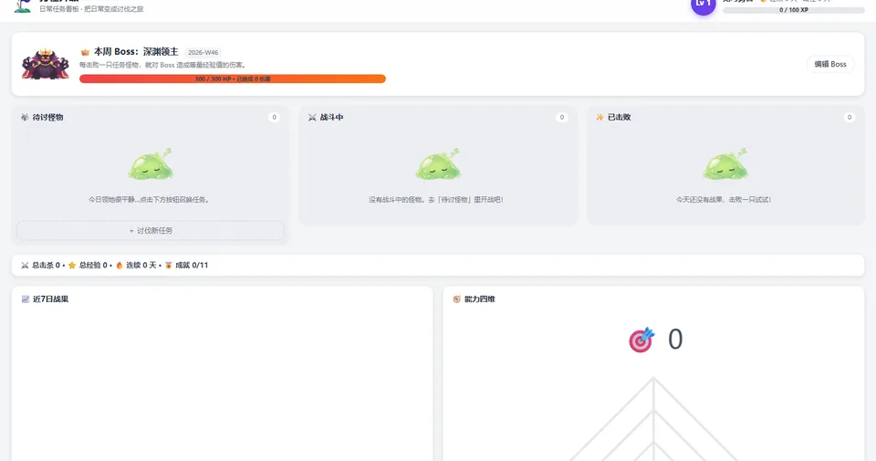
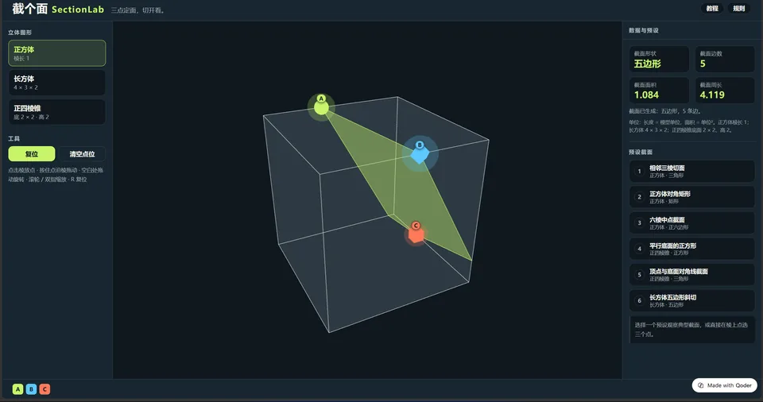

PRODUCTIVITY · 任务看板Selected work / 精选
四件现在能玩的东西。
不是概念稿，是已经上线、可以用手机打开的完整作品。
2026 Qoder 高校创造力大赛 · StudyHack
截个面，
把立体几何
切开看。
面向高中立体几何学习者、大一工图学生和数学老师。不是静态示意图，是三个点拖出来的真实截面。
- 真实几何平面与凸多面体求交，面积/周长由算法计算。
- 六个预设三角形、矩形、正六边形、正方形等典型题。
- 手机可用触摸放点、拖点、双指缩放，不需要电脑。

SECTION LAB / 2026